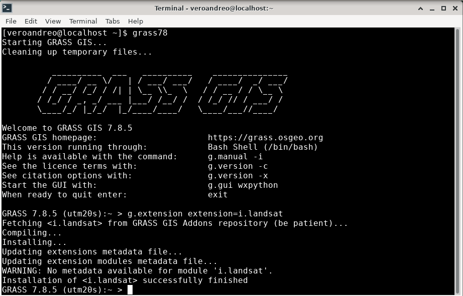
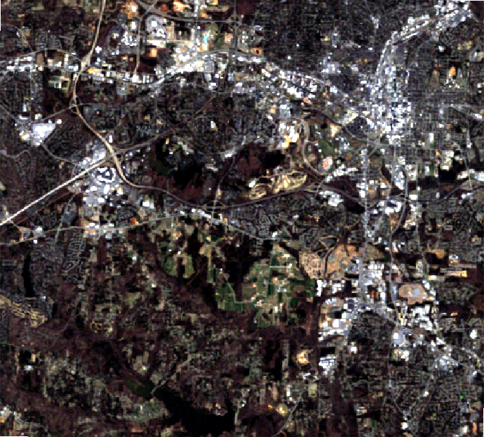
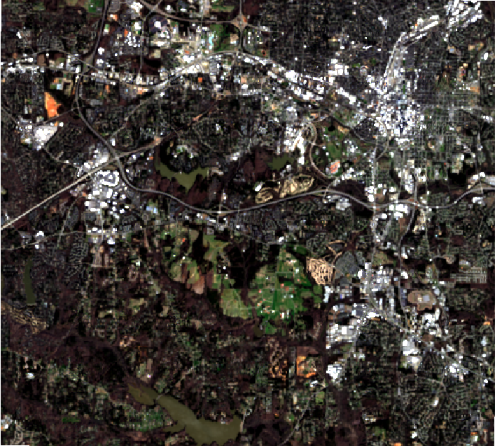
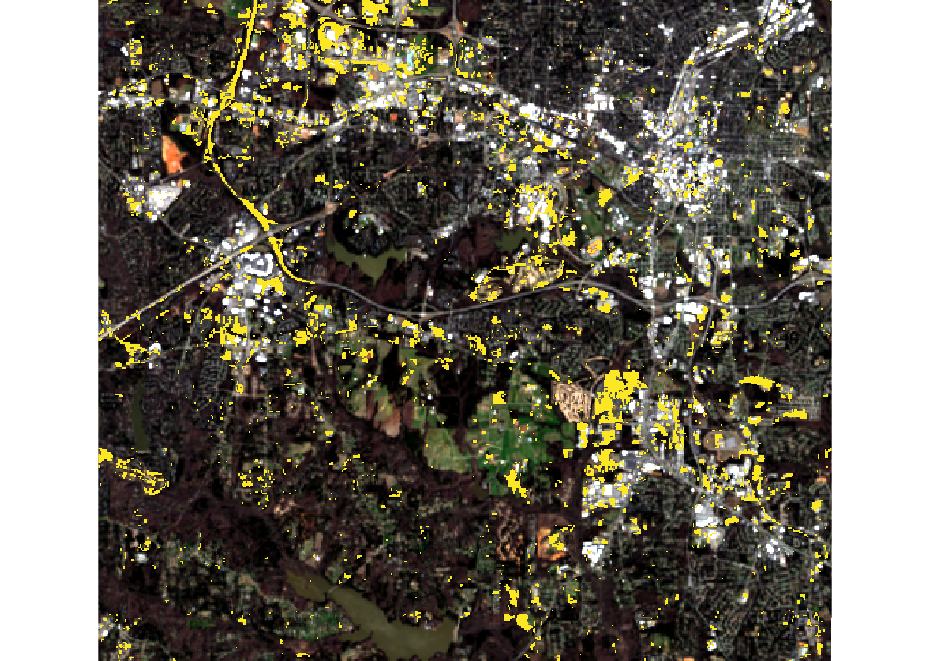

Working with i.landsat in GRASS GIS
In this tutorial, I’ll exemplify different uses of the freshly created i.landsat toolset and its integration with other GRASS GIS core modules and add-ons for a full workflow to process Landsat data.
First of all, to be able to connect to EarthExplorer you’ll need a user name and password. If you are not yet registered, please see the register page for signing up. Then, create a plain text file with your credentials:
myusername
mypasswordWe will work in the landsat mapset within the North Carolina full sample location. We first start GRASS GIS and set the computational region to one of the existent landsat bands there:
# start grass in landsat mapset
grass78 grassdata/nc_spm_08_grass7/landsat/
# list available raster maps
g.list type=raster mapset=.
# set the computational region
g.region -p raster=lsat7_2000_40
# display the RGB
d.mon wx0
d.rgb red=lsat7_2000_30 green=lsat7_2000_20 blue=lsat7_2000_10Next step is to install the i.landsat toolset via g.extension as shown below

The module i.landsat.download allows to search and download Collection 1 Landsat TM, ETM and OLI data from USGS EarthExplorer through the landsatxplore Python library.
In this example, we will retrieve scenes which footprint intersects the current computational region extent. Note however that the area of interest can be optionally defined by a vector map.
If we have a look at the metadata, the Landsat 7 data already in the sample location is dated March 31, 2000.
r.info map=lsat7_2000_40Hence, to perform change detection we should search for scenes from the same time of the year, but in this example, for 2010 and 2020. We’ll first use the -l flag to only list available Landsat data.
# 2010 - Landsat TM
i.landsat.download -l settings=credentials.txt \
dataset=LANDSAT_TM_C1 clouds=5 \
start='2010-02-01' end='2010-04-30'
# 3 scenes found.
# LT50160352010078PAC01 LT05_L1TP_016035_20100319_20160904_01_T1 2010-03-19 0.00
# LT50150352010119GNC01 LT05_L1TP_015035_20100429_20160901_01_T1 2010-04-29 0.00
# LT50160352010094EDC00 LT05_L1TP_016035_20100404_20160903_01_T1 2010-04-04 4.00
#2020
i.landsat.download -l settings=credentials.txt \
dataset=LANDSAT_8_C1 clouds=5 \
start='2020-02-01' end='2020-04-30'
# 1 scenes found.
# LC80160352020058LGN00 LC08_L1TP_016035_20200227_20200313_01_T1 2020-02-27 0.37We’ll download the scenes from March 19, 2010 and February 27, 2020, which is the only one found with the search criteria we set. To download only the selected scenes, we’ll pass their IDs via the id option.
i.landsat.download settings=credentials.txt \
id=LT50160352010078PAC01,LC80160352020058LGN00 \
output=landsat_dataNow that we have downloaded the Landsat scenes, we need to import them into GRASS GIS. For that purpose we use the second module in the toolset: i.landsat.import. By default, it imports all Landsat bands within the scene files found in the input directory. In this case, we’ll keep this option, but since we are only interested in the region defined by the Landsat bands already present in the mapset, we’ll limit the import with extent=region. Furthermore, since Landsat data comes in UTM coordinate reference system, we’ll need to re-project the data. This will be done during import by means of r.import when we set the -r flag. Let’s first have a look at the files that will be imported:
# print all landsat bands to import within the landsat_data folder
i.landsat.import -p input=landsat_data
# /landsat_data/LT05_L1TP_016035_20100319_20160904_01_T1_B7.TIF 0 (EPSG: 32617)
# /landsat_data/LT05_L1TP_016035_20100319_20160904_01_T1_B6.TIF 0 (EPSG: 32617)
# /landsat_data/LT05_L1TP_016035_20100319_20160904_01_T1_B5.TIF 0 (EPSG: 32617)
# /landsat_data/LT05_L1TP_016035_20100319_20160904_01_T1_B4.TIF 0 (EPSG: 32617)
# ...
# /landsat_data/LC08_L1TP_016035_20200227_20200313_01_T1_B7.TIF 0 (EPSG: 32617)
# /landsat_data/LC08_L1TP_016035_20200227_20200313_01_T1_B6.TIF 0 (EPSG: 32617)
# /landsat_data/LC08_L1TP_016035_20200227_20200313_01_T1_B5.TIF 0 (EPSG: 32617)Now, we actually import the data and check the list of imported maps:
# import all bands, subset to region setting and reproject on the fly
i.landsat.import -r input=landsat_data extent=region
# list raster maps
g.list type=raster mapset=.Let’s also check the metadata and display the respective RGB combinations.
# check metadata
r.info LT05_L1TP_016035_20100319_20160904_01_T1_B3First, we set all color tables to grey and perform color enhancing for a better visualization
i.colors.enhance \
red=LT05_L1TP_016035_20100319_20160904_01_T1_B3 \
green=LT05_L1TP_016035_20100319_20160904_01_T1_B2 \
blue=LT05_L1TP_016035_20100319_20160904_01_T1_B1
i.colors.enhance \
red=LC08_L1TP_016035_20200227_20200313_01_T1_B4 \
green=LC08_L1TP_016035_20200227_20200313_01_T1_B3 \
blue=LC08_L1TP_016035_20200227_20200313_01_T1_B2And then we can use either the main GUI or the interactive monitors called from the terminal as follows:
d.mon wx0
d.rgb red=LT05_L1TP_016035_20100319_20160904_01_T1_B3 \
green=LT05_L1TP_016035_20100319_20160904_01_T1_B2 \
blue=LT05_L1TP_016035_20100319_20160904_01_T1_B1
d.mon wx1
d.rgb red=LC08_L1TP_016035_20200227_20200313_01_T1_B4 \
green=LC08_L1TP_016035_20200227_20200313_01_T1_B3 \
blue=LC08_L1TP_016035_20200227_20200313_01_T1_B2

Since we are interested in performing change detection among two different dates, we need to perform atmospheric correction first. To that aim, we use the i.landsat.toar module. In this case, we use the simple DOS algorithm but a more sophisticated method is provided in i.atcorr.
i.landsat.toar input=LT05_L1TP_016035_20100319_20160904_01_T1_B \
output=LT05_L1TP_016035_20100319_toar_B \
sensor=tm5 \
metfile=LT05_L1TP_016035_20100319_20160904_01_T1_MTL.txt \
method=dos1
i.landsat.toar input=LC08_L1TP_016035_20200227_20200313_01_T1_B \
output=LC08_L1TP_016035_20200227_toar_B \
sensor=oli8 \
metfile=LC08_L1TP_016035_20200227_20200313_01_T1_MTL.txt \
method=dos1Now, we’ll estimate the tasseled cap transformation with i.tasscap. The tasseled cap transformation is effectively a compression method to reduce multiple spectral data into a few bands. The method was originally developed for understanding important phenomena of crop development in spectral space. It is generally accepted that the first component is brightness, the second greennes and the third one, wetness.
i.tasscap \
input=LT05_L1TP_016035_20100319_toar_B1,LT05_L1TP_016035_20100319_toar_B2,LT05_L1TP_016035_20100319_toar_B3,LT05_L1TP_016035_20100319_toar_B4,LT05_L1TP_016035_20100319_toar_B5,LT05_L1TP_016035_20100319_toar_B7 \
output=L5_2010_tasscap \
sensor=landsat5_tm
i.tasscap \
input=LC08_L1TP_016035_20200227_toar_B2,LC08_L1TP_016035_20200227_toar_B3,LC08_L1TP_016035_20200227_toar_B4,LC08_L1TP_016035_20200227_toar_B5,LC08_L1TP_016035_20200227_toar_B6,LC08_L1TP_016035_20200227_toar_B7 \
output=L8_2020_tasscap \
sensor=landsat8_oliFinally, we use the change vector analysis (CVA), a common method to perform the change detection analysis, by providing the brightness and greenness features of the tasseled cap transform we just did. As input for CVA, two maps for each date must be given: in general, on the X axis an indicator of overall reflectance and on the Y axis an indicator of vegetation conditions. Hence, our choice for components 1 and 2 of tasseled cap.
i.cva \
xaraster=L5_2010_tasscap.1 xbraster=L8_2020_tasscap.1 \
yaraster=L5_2010_tasscap.2 ybraster=L8_2020_tasscap.2 \
output=CVA_2010_2020 stat_threshold=1As an output, we obtain 4 maps:
- angle: map of the angles of the change vector between the two dates;
- angle_class: map of the angles, classified in four quadrants (0-90, 90-180, 180-270, 270-360);
- magnitude: map of the magnitudes of the change vector between the two dates;
- change: final map of change
The change map is created using the classified angle map and applying a threshold to the magnitude. Pixels that have values higher than the threshold are divided in four categories depending on the quadrant they belong to. In this case, with default options, we detect only one type of change shown in yellow below. Have a look at Karnieli et al. 2014 for a conceptual diagram explaining the different types of changes.

Back to top